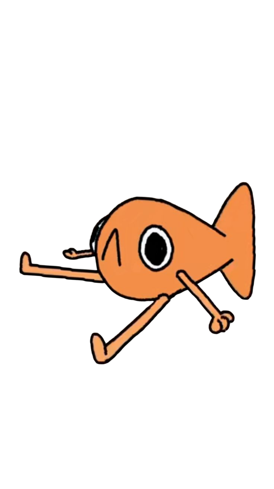

ODDSTEVE
Accueil
Informations
Liens utiles
Quiz
A propos

Attention ! Il est recommandé de lire les
informations
avant de continuer !
Quiz time !
Combien il y a t-il d'espèces de requins en danger ? :
167
3millions
245
Comment s'appelle notre mascotte ? :
De quelle couleur est-il ? :
Combien d'espèces de poissons sont actuellement reconnues ? :
100
Environ 10 000
Environ 28 000
Quelle est la principale caractéristique des poissons ? :
Ils sont carnivores
Ils ont des poumons
Ils ont des branchies et des nageoires
Quel pourcentage des poissons d’eau douce évalués par l’UICN en 2023 est considéré comme menacé ? :
10%
25%
50%
C'est quoi le shark finning ? :
La chasse aux oeufs de requins
La destruction de leur habitat
La coupe de leurs ailerons puis leur rejet à la mer
Pourquoi les raies sont particulièrement vulnérables à la surpêche ? :
Elles vivent à la surface
Elles se reproduisent lentement
Elles attaquent les filets de pêche
Quelle est une des principales causes de mortalité chez les céacés :
Les attaques de requin
Les températures froides
Les captures accidentelles dans les filets
Pourquoi les cétacés ne sont pas des poissons ? :
Ce sont des amphibiens
Ce sont des mammifères
Ils sont grands
Envoyer